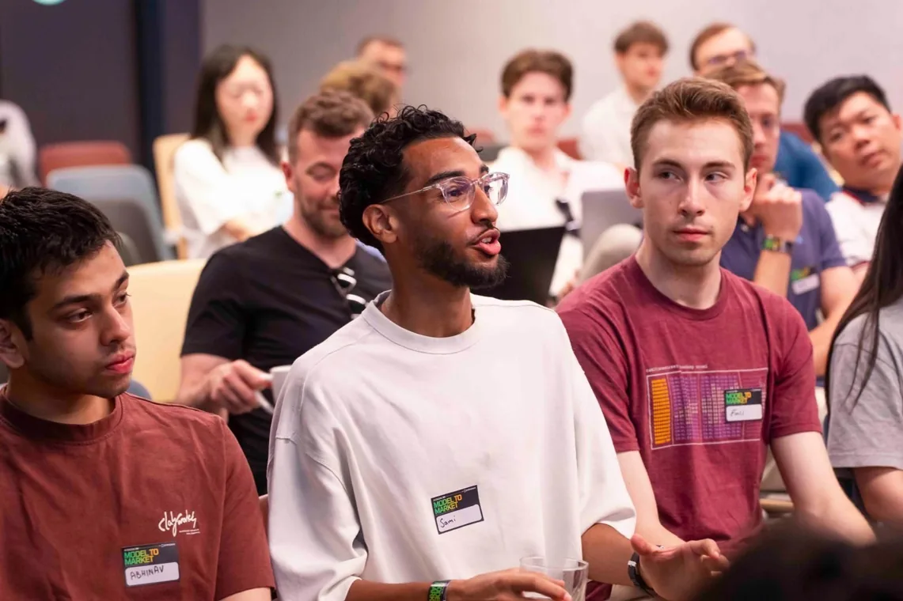
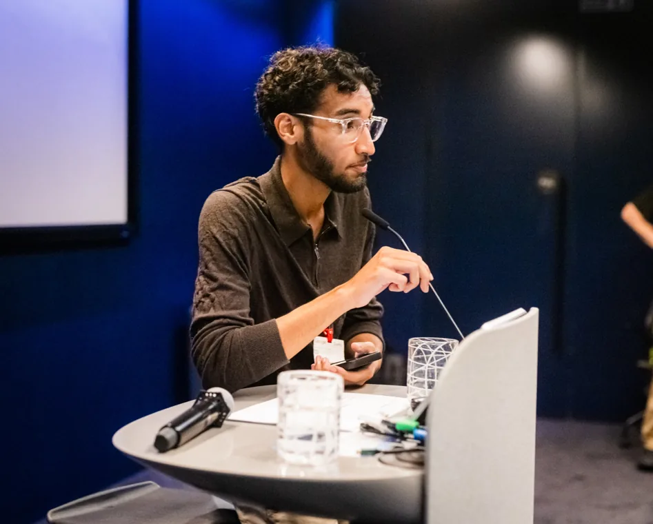

YOUTH + AI
UK Youth AI Literacy
Nearly 700 applications in under 12 hours. Fifty students joined the first pilot at Google.
Read the storyCOMMUNITY BUILDER / LONDON
I bring young people into tech through AI literacy, hackathons and grassroots communities.
From King’s Cross, building with people everywhere.
SELECTED WORK / 001
Projects and communities that create opportunity, confidence and connection for young people.
Nearly 700 applications in under 12 hours. Fifty students joined the first pilot at Google.
Read the story
Helped bring 240+ young people into Google’s London HQ for an AI education event.
Read the storySharing the people and stories behind a local football club. United by more than football.
Read the storyTHE PERSON BEHIND THE PIXELS / 002
I grew up in King’s Cross. Community is where I learned that access changes what people imagine for themselves. Today I connect young people to AI, education and the people who can open doors.
I build the invitation, help people feel they belong in the room, and make sure the momentum carries beyond one event.
Let’s build something together
HOW IT HAPPENED / 003
Different rooms. The same belief that people deserve a way in.
I led youth engagement and the organic recruitment campaign for a national AI literacy programme with Google DeepMind, the University of Cambridge and BBC R&D. The pilot selected 50 students and brought them together with 50+ Google volunteers.
~700 applications / <12 hoursOn the steering committee, I helped shape an AI education event with Google and Havas that welcomed more than 240 young people into Google’s London HQ.
240+ young peopleAs a volunteer leading digital and media for my local club, I focus on the people who make grassroots football matter and the connections it creates across Camden.
United by more than footballNEXT LEVEL / 004
Let’s talk community, youth engagement, AI literacy or your next big idea.
Email Sami